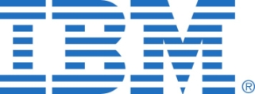

Keynote Speakers
Steve Huffman
CEO and Co-founder of Reddit
Steve Huffman is CEO and co-founder of Reddit. For Steve, the love of programming was instantaneous— and everlasting. A native of Virginia, programming has been the only consistent hobby he’s had. Steve turned his passion into a career as co-founder of Reddit and the co-founder of Hipmunk. In these roles, he’s had the opportunity to do what he loves while also creating companies that have changed the way people use the Internet.
Kyle Vogt
CEO and Founder of Cruise Automation

Kyle Vogt is the CEO and founder of Cruise Automation, the driverless car startup that was acquired for roughly $1 billion by GM in 2016. An engineer at heart, Kyle’s interest in self-driving technology can be traced back to his time at MIT. As an undergrad, he worked on the 2005 DARPA Grand Challenge, where he co-led a team to retrofit a truck to drive across the Nevada desert. Kyle also co-founded Twitch, Socialcam, and Justin.tv - but his life passion is to deploy self-driving cars at scale in order to make automobile accidents a thing of the past. A native of Kansas City, he currently resides in San Francisco with his wife Tracy and his dog, Charlie.
Workshops
1: Typescript
2:00pm - 2:30pm @ Mezzanine Lounge
Samsara
Insert description here!
3: Metamask/Ethereum Technology
3:30pm - 4:00pm @ Mezzanine Lounge
ConsenSys
Insert description here!
5: Intro to React/Redux
5:00pm - 5:30pm @ Mezzanine Lounge
Fin
Insert description here!
2: Deep Learning 101 with NLP and Vision Tasks
2:00pm - 2:30pm @ Johnson Media Room
Baidu
* Speech recognition deeper dive
* Basic understanding of probability
* Interest in deep learning
* Can run docker 1.3+ on computer (if not, it is fine too; you might just want to be prepared.)
4: Quantum Computing
3:30pm - 4:00pm @ Johnson Media Room
IBM
Insert description here!
6: Build a Deep Learning Based Search Engine in 20 Minutes
5:00pm - 5:30pm @ Johnson Media Room
GIPHY
Presented by GIPHY CTO, Anthony Johnson
Difficulty Level: Intermediate (Should be able to program and know basic mathematics)
Tech Talks
1: Baidu
12:30pm - 1pm @ Johnson Media Room
Insert description here!
3: a16z
2:45pm - 3:15pm @ Johnson Media Room
Insert description here!
5: Google
5:45pm - 6:15pm @ Johnson Media Room
Insert description here!
7: Amadeus
7:15pm - 7:45pm @ Johnson Media Room
Insert description here!
2: Microsoft
1:15pm - 1:45pm @ Johnson Media Room
Insert description here!
4: Disney
4:15pm - 4:45pm @ Johnson Media Room
Insert description here!
6: IBM
6:30pm - 7pm @ Johnson Media Room
Quantum computing has the potential to revolutionize industries from pharmaceuticals to finance and requires a totally different way of thinking about information and constructing algorithms. The IBM quantum research team has made two quantum processors available to the public over the cloud through the IBM Q Experience. Scientists, programmers, and students alike are able to design experiments and learn about quantum computing through a suite of programming tools IBM has introduced. Our software package includes a Python-based API, the QISKit software development kit, our intermediate representation for building quantum circuits called OpenQASM, and a number of Jupyter notebook tutorials for learning and trying out quantum algorithms. The proposed workshop for HackMIT will introduce attendees to QISKit with some fundamental quantum computing examples such as generating superposition states and entanglement. This tutorial will introduce the building blocks of quantum computing using the IBM Q Experience, and hackers can follow along with interactive Python notebooks. Previous knowledge of quantum mechanics is not required, but experience with Python programming is beneficial. The workshop will extend the developing relationship between IBM Q, our quantum brand, and MIT’s Research Laboratory of Electronics to others in the MIT community. We will give HackMIT participants a chance to get started with programming a quantum computer and begin to understand this fundamentally different and potentially revolutionary type of computing.
Fireside Chats
1: Limor Fried, live from the Adafruit Factory!
Founder and CEO of Adafruit

8:00pm - 8:30pm @ Johnson Media Room
Ladyada is the hacker @ Adafruit, founded in 2005 by MIT hacker & engineer Limor “Ladyada” Fried. Her goal was to create the best place online for learning electronics and making the best designed products for makers of all ages and skill levels. Adafruit has grown to over 100+ employees in the heart of NYC with a 50,000+ sq ft. factory. Adafruit has expanded offerings to include tools, equipment and electronics that Limor personally selects, tests and approves before going in to the Adafruit store. Limor was the first female engineer on the cover of WIRED magazine, and was awarded Entrepreneur magazine’s Entrepreneur of the Year. Ladyada was a founding member of the NYC Industrial Business Advisory Council. Adafruit is ranked #11 in the top 20 USA manufacturing companies and #1 in New York City by Inc. 5000 “fastest growing private companies”. Adafruit is featured in Google’s Economic Impact Report. Limor was named a White House Champion of Change in 2016. In June Limor was on the cover of MAKE Magazine. Adafruit is a 100% woman-owned company.
2: Poulomi Damany
VP of Data Products at Credit Karma
10:00pm - 10:30pm @ Johnson Media Room
Poulomi Damany is an immigrant, entrepreneur, and engineer with 15+ years of experience in data-driven consumer products from Yahoo!, Symantec and as a founding team member of 2 startups. In 2016, she joined the U.S. Digital Service (USDS), a startup at the White House formed from the reboot of Healthcare.gov. USDS brings techies into public service to improve our government's most important services, like helping veterans get health benefits or modernizing the immigration system. The experience left her with a resolve to only work on tech and products that genuinely made peoples' live better. She found that mission at Credit Karma, a consumer fin-tech company in San Francisco, that helps 75 million consumers make sense of and progress in their financial lives. She currently serves as Credit Karma's Vice President of Data Products.
3: Andrew
10:45pm - 11:15pm @ Johnson Media Room
Insert Info Here!
Q&A Panel with Maria Latushkin, Charlie Cheever, and Austin McChord
8:45pm - 9:45pm @ Johnson Media Room

Maria Latushkin: CTO of Narvar
As Chief Technology Officer at Narvar, Maria Latushkin is responsible for leading the company's technology vision and team. Maria joined Narvar with more than 17 years of experience in eCommerce and retail. Most recently Maria evolved and expanded the technology teams at One Kings Lane and Peet’s Coffee and Tea. Prior to that she spent nine years at Walmart.com developing numerous areas in engineering integral to the company's growth and scale in eCommerce.
Charlie Cheever: Co-founder of Quora and Expo.io
Insert description and update picture for Charlie!
Austin McChord: Founder and CEO of Datto
Austin McChord is the Founder and CEO of Datto, the innovative provider of total data protection solutions serving small to mid-sized businesses via Managed Services Providers. As Datto's chief innovator, Austin’s vision has resulted in thousands of Datto partners protecting mission critical data on behalf of tens of thousands of businesses across the globe. Through Austin’s leadership, Datto has experienced unprecedented growth. Largely self-funded and profitable, Datto has grown to more than 800 plus employees since Austin founded the company in 2007. Austin is a frequently recognized entrepreneur who was named an Ernst and Young Technology Entrepreneur of the Year in 2016 and to the Forbes 30 under 30 in 2015. He has a degree in Bioinformatics from Rochester Institute of Technology, and holds several patents.